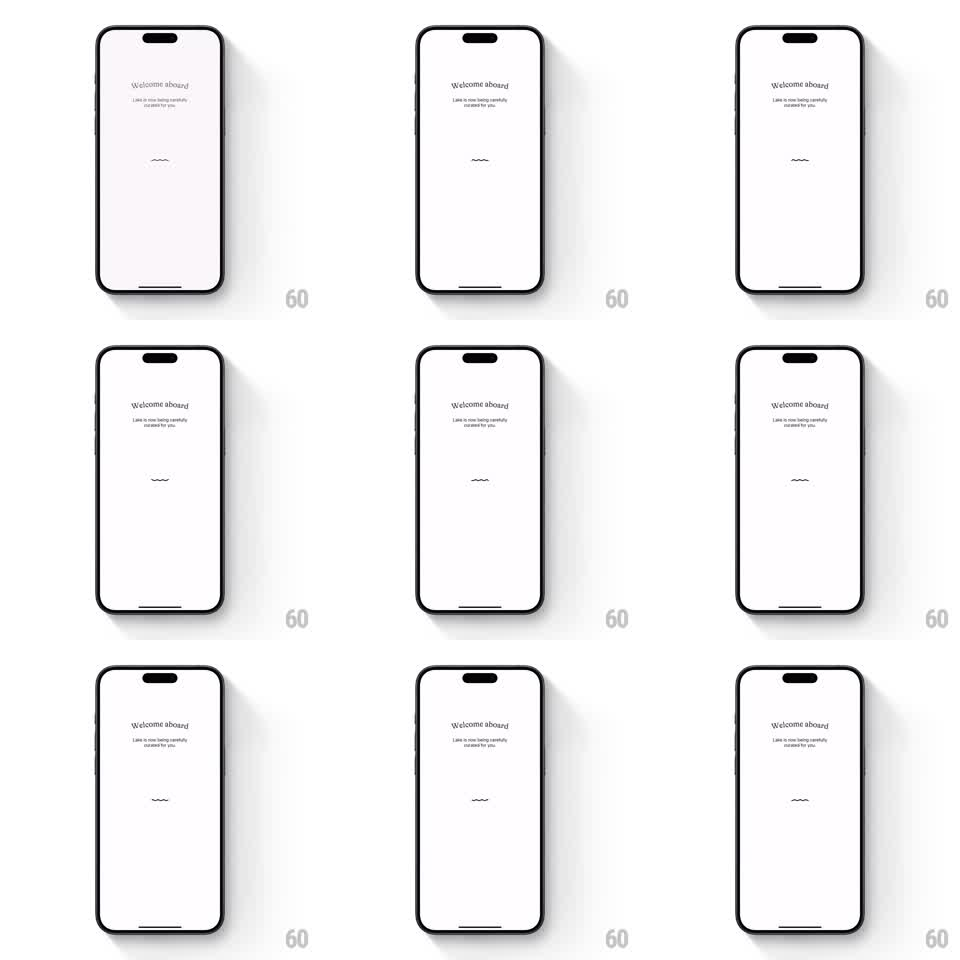

Media
Frame-by-frame

Rebuild this animation 1:1: Lake's onboarding loading screen - a sparse white "Welcome aboard" page where a single small hand-drawn wave squiggle under the headline undulates gently in place as a looping loading indicator.

Rebuild this animation 1:1: Lake's onboarding loading screen - a sparse white "Welcome aboard" page where a single small hand-drawn wave squiggle under the headline undulates gently in place as a looping loading indicator.
## Integration
Integration: stack-agnostic spec - springs given as stiffness/damping, timed motions as duration + curve; map every value to your framework and animation library of choice.
## Scene
White screen, small serif wordmark headline "Welcome aboard" centered near the top, one-line subtext below it ("Lake is now being carefully curated for you"), and a tiny black wavy line (~24px wide) at vertical center. Home indicator at bottom. Nothing else moves.
## Motion spec
Pattern: looping ambient loader.
- The squiggle is a single stroked path (2-3 peaks, ~2px stroke, round caps).
- Loop: the path morphs phase - peaks travel left-to-right (or the path phase-offsets) over ~1.6s, linear, infinite.
- Amplitude stays constant (~4px peak-to-peak); no scale, no fade, no easing - a calm continuous undulation.
- Headline and subtext are static throughout.
## Calibration
- The restraint is the point: one small moving mark on an otherwise still page.
- Keep the wave hand-drawn (slightly irregular peaks), not a mathematically perfect sine.
## Reduced motion
Static squiggle; optionally pulse opacity 0.4 -> 1 over 1.2s.
## Don't miss
- The wave never changes position or size - only its internal phase moves.
- No spinner, no progress bar, no percentage - the squiggle IS the loader.